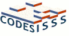
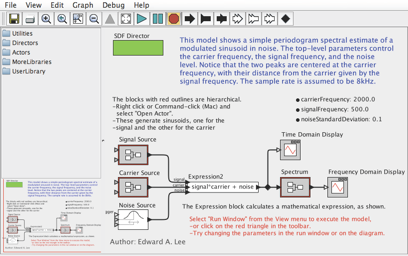
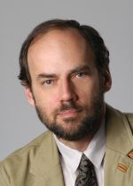
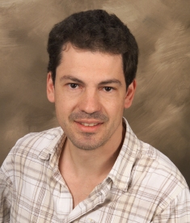
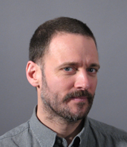

Ptolemy Tutorial: Exploring Models of Computation with Ptolemy II
Sunday, October 24, 2010, Scottsdale, AZ
Held in conjunction with Embedded
Systems Week
Registrants of either CASES, CODES+ISSS or EMSOFT may attend
this tutorial for free!As of 7/20, registration was not yet open.
Tutorial attendees should bring their own laptops.
|


|
Abstract
The Ptolemy project studies modeling, simulation, and design of concurrent, real-time, embedded systems. The focus is on assembly of concurrent components. The key underlying principle in the project is the use of well-defined models of computation that govern the interaction between components. A major problem area being addressed is the use of heterogeneous mixtures of models of computation.
Ptolemy II takes a component view of design, in that models are constructed as a set of interacting components. A model of computation governs the semantics of the interaction, and thus imposes an execution-time discipline. Ptolemy II has implementations of many models of computation including Synchronous Data Flow, Kahn Process Networks, Discrete Event, Continuous Time, Synchronous/Reactive and Modal Models
This hands-on tutorial explores how these models of computation are implemented in Ptolemy II and how to create new models of computation such as a “non-dogmatic” Process Networks example and a left-to-right execution policy example.
Introduction
Ptolemy II [1][6] is an open-source software framework supporting
experimentation with actor-oriented design. Actors are software
components that execute concurrently and communicate through messages
sent via interconnected ports. A model is a hierarchical
interconnection of actors. In Ptolemy II, the semantics of a model is
not determined by the framework, but rather by a software component in
the model called a director, which implements a model of
computation. The Ptolemy Project has developed directors supporting
process networks (PN),
discrete-events (DE),
dataflow (SDF),
synchronous/reactive(SR),
rendezvous-based models,
3-D visualization,
and
continuous-time
models.
Each level of the hierarchy in a model can
have its own director, and distinct directors can be composed
hierarchically. A major emphasis of the project has been on
understanding the heterogeneous combinations of models of computation
realized by these directors. Directors can be combined hierarchically
with state machines to make
modal models
[2] [7]. A hierarchical
combination of continuous-time models with state machines yields
hybrid systems [3]; a combination of synchronous/reactive with state
machines yields StateCharts [4] (the Ptolemy II variant is close to
SyncCharts).
Ptolemy II has been under development since 1996; it is a successor
to
Ptolemy Classic,
which was developed since 1990. The core of
Ptolemy II is a collection of Java classes and packages, layered to
provide increasingly specific capabilities. The kernel supports an
abstract syntax, a hierarchical structure of entities with ports and
interconnections. A graphical editor called Vergil supports visual
editing of this abstract syntax. An XML concrete syntax called MoML
provides a persistent file format for the models. Various specialized
tools have been created from this framework, including
HyVisual
(for hybrid systems modeling),
Kepler
(for scientific workflows),
VisualSense
(for modeling and simulation of wireless networks),
Viptos
(for sensor network design), and some commercial products. Key parts
of the infrastructure include an actor abstract semantics, which
enables the interoperability of distinct models of computation with a
well-defined semantics; a model of time (specifically, super-dense
time, which enables interaction of continuous dynamics and imperative
logic); and a sophisticated type system supporting type checking, type
inference, and polymorphism. The type system has recently been
extended to support user-defined ontologies [5]. Various experiments
with synthesis of implementation code and abstractions for
verification are included in the project.

An example of a Vergil window. Vergil is a graphical
editor for Ptolemy II.
Speakers
|  |
Edward A. Lee, (http://ptolemy.org/~eal)
Edward A. Lee is the Robert S. Pepper Distinguished Professor of
the Electrical Engineering and Computer Sciences (EECS) department
at U.C. Berkeley. His research interests center on design, modeling,
and simulation of embedded, real-time computational systems. He is
the director of the Ptolemy project.
|
|  |
Stavros Tripakis (http://www-verimag.imag.fr/~tripakis)
Stavros Tripakis is Associate Research Scientist at UC
Berkeley. His work lies in the areas of embedded, real-time and
distributed systems, model-based and component-based design,
verification, testing and synthesis.
|
|  |
Christopher Brooks (http://ptolemy.org/~cxh)
Christopher Brooks is the Ptolemy Project Software Manager and the
Executive Director of the the Center for Hybrid and Embedded
Software Systems (CHESS).
|
Topics
The tutorial is a hands-on tutorial of 3 to 3.5 hours on Sunday,
October 24th, 2010.
Attendees should bring their own laptops.
- (13:00-14:00) Setting up Ptolemy II 8.0 and Eclipse: installing
Eclipse; configuring Ptolemy; compiling Ptolemy; running a
model within Eclipse.
(We will provide USB sticks with Windows, Mac and Linux binaries)
- (14:00-15:00) Overview of Models of Computation in Ptolemy II: abstract semantics; actors and directors; currently implemented models of computation (Synchronous Data Flow, Dynamic Data Flow, Kahn Process Networks, Discrete Event, Continuous Time, Syn-chronous/Reactive and Modal Models); combining models of computation.
- (15:00 -15:30) Break
- (15:30 -17:00) Extending Ptolemy Models of Computation: Ptolemy execution semantics object model; using Eclipse to extend Ptolemy; building a non-dogmatic
Kahn Process Networks model of computation; building a left to right model of computation.
The tutorial is similar to material presented at the
February, 2009 Ptolemy Miniconference tutorial
and at the
February, 2007 Ptolemy Miniconference tutorial.
References
[1]
Johan Eker, Jorn Janneck, Edward A. Lee, Jie Liu, Xiaojun
Liu, Jozsef Ludvig, Sonia Sachs, Yuhong Xiong.
Taming heterogeneity - the Ptolemy approach,
Proceedings of the IEEE, 91(1):127-144,
January 2003.
(Key citation for the Ptolemy project)
[2]
Edward A. Lee. Finite
State Machines and Modal Models in Ptolemy
II, Technical report, EECS Department,
University of California, Berkeley, UCB/EECS-2009-151,
December, 2009.
[3]
E. A. Lee and H. Zheng, "Operational Semantics of Hybrid Systems," Invited paper in Proceedings of Hybrid Systems: Computation and Control (HSCC) LNCS 3414, Zurich, Switzerland, March 9-11, 2005, pp.25-53.
[4]
E. A. Lee, H. Zheng, "Leveraging
Synchronous Language Principles for Heterogeneous Modeling and
Design of Embedded Systems," EMSOFT '07, September 30 - October 3, 2007, Salzburg, Austria.
[5]
M.-K. Leung, T. Mandl, E. A. Lee, E. Latronico,
C. Shelton, S. Tripakis, and B. Lickly, "Scalable
Semantic Annotation using Lattice-based Ontologies," ACM/IEEE 12th International Conference
on Model Driven Engineering Languages and Systems (MODELS), Denver,
CO, USA, 4-9 October, 2009.
[6]Christopher Brooks, Edward A. Lee. Ptolemy
II - Heterogeneous Concurrent Modeling and Design in
Java, 11 February, 2010; Poster presented at the 2010 Berkeley
EECS Annual Research Symposium (BEARS).
[7]
Edward A. Lee. S. Tripakis. "Modal Models in Ptolemy". In EOOLT 2010
3rd International Workshop on
Equation-Based Object-Oriented Modeling Languages
and Tools. Linkoping University Electronic Press, October
2010. To appear.
Please direct questions to
cxh at eecs berkeley edu